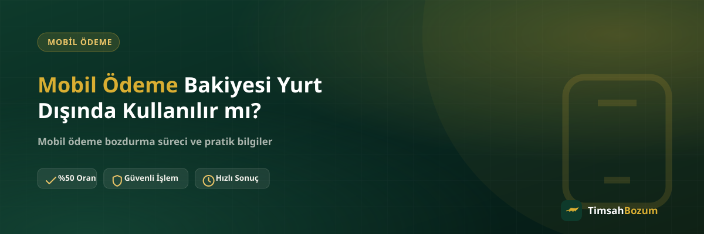

Tatile veya iş seyahatine çıkmadan önce hattında mobil ödeme bakiyesi kalan pek çok kullanıcı, bu bakiyenin yurt dışındayken de kullanılıp kullanılamayacağını merak ediyor. Roaming açıkken hattın davranışı yurt içindekinden farklı işleyebiliyor, bu da bakiyeyle ilgili belirsizlik yaratıyor. Bu yazıda yurt dışında mobil ödemenin neden değişkenlik gösterebileceğini ve kullanamadığın bir bakiyeyi nasıl değerlendirebileceğini anlatıyoruz.
Yurt Dışında Mobil Ödeme Neden Farklı Çalışır?
Mobil ödeme, hattına tanımlı bir harcama limitinin dijital ürün ve hizmet alışverişinde kullanılmasına imkân veren bir sistemdir. Bu sistemin yurt dışında da aynı şekilde çalışıp çalışmayacağı, operatörünün roaming anlaşmalarına ve o ülkedeki altyapı entegrasyonuna bağlıdır. Yani "yurt içinde çalışıyordu, yurt dışında da çalışır" gibi bir varsayımla hareket etmek yanıltıcı olabilir; her operatörün ve her ülkenin durumu farklı olabiliyor.
Roaming Açıkken Mobil Ödeme Kullanılabilir mi?
Roaming aktif olduğunda hat genel olarak arama, mesaj ve internet hizmetlerini sürdürse de, mobil ödeme gibi katma değerli bir hizmetin de aynı kapsamda çalışıp çalışmadığı ayrı bir konudur. Bu tür detaylar zaman içinde ve operatöre göre değişebildiği için, seyahate çıkmadan önce güncel durumu doğrudan operatöründen teyit etmen en sağlıklısı. TimsahBozum olarak operatörlerin roaming politikalarını biz belirlemiyoruz, dolayısıyla kesin bir "çalışır" veya "çalışmaz" cevabı vermek yerine kaynağından teyit almanı öneriyoruz.
Yurt Dışındayken Oluşan Bakiyeye Ne Olur?
Bazı durumlarda bakiye yurt dışına çıkmadan önce zaten hatta tanımlı olabilir, bazı durumlarda ise seyahat sırasında farklı şekillerde oluşabilir. Hangi şekilde oluştuğu bozum işlemi açısından bir fark yaratmaz; önemli olan bakiyenin güncel ve doğru görünmesidir. Yurt dışındayken kullanamadığın bir bakiye, yurda döndüğünde de elinde kalmaya devam eder, kaybolmaz.
Kullanılamayan Bakiyeyi Bozdurmak Mantıklı mı?
Harcayamadığın bir bakiyeyi hattında beklemeye bırakmak yerine mobil ödeme bozdurma hizmetiyle nakde çevirmek, elindeki değeri hemen kullanılabilir hale getirmenin pratik bir yolu. Özellikle belirli bir platformda ödeme yapamadığın ya da bakiyeyi kısa sürede değerlendiremeyeceğini fark ettiğin durumlarda bu seçenek işine yarayabilir.
Bozum İşlemini Yurt Dışındayken Başlatabilir miyim?
Evet. Süreç tamamen WhatsApp üzerinden yürüdüğü için fiziksel olarak Türkiye'de olman gerekmiyor; internet bağlantın olan her yerden güncel bakiyeni gösteren bir ekran görüntüsüyle işlemini başlatabilirsin. Bakiyeni WhatsApp hattımıza (+90 543 887 21 71) gönderir, güncel oranı teyit eder, onay sonrası ödemeni WhatsApp üzerinden görüşülen yöntemle alırsın. Üyelik, form doldurma veya hesabına erişim istenmez.
Yurt Dışından İşlem Yaparken Neye Dikkat Etmeli?
Bilgini yalnızca resmi hattımızdan paylaşman önemli; farklı bir numaradan veya platformdan (Instagram DM gibi) "TimsahBozum" adına gelen bir teklif varsa, bilgi paylaşmadan önce bu numaradan teyit istemelisin. Ayrıca hattına gelen bir SMS doğrulama kodu senden asla istenmez; böyle bir talep gelirse bu dolandırıcılık şüphesidir ve işlemi durdurmalısın. Yurt dışındayken farklı bir numaradan mesaj yazman gerekse bile, işlem her zaman aynı doğrulanmış WhatsApp hattı üzerinden ilerler.
İşlem Ne Zaman Yanıtlanır?
TimsahBozum her gün 10:00 ile 03:00 arası aktif; bu saatler Türkiye saatine göre geçerlidir. Bulunduğun ülkenin saat dilimi farklıysa, mesajını gönderdiğin an değil hattımızın aktif olduğu saat diliminde yanıt alacağını göz önünde bulundurman faydalı olur. Mesajın bu saatler dışında gelirse kaybolmaz, hat açıldığında sırasıyla yanıtlanır.
Farklı Ülkelerde ve Operatörlerde Durum Değişir mi?
Yurt dışında mobil ödeme deneyimi tek bir kurala bağlı değil; hangi ülkede olduğun, hangi operatörü kullandığın ve o operatörün o ülkedeki anlaşmaları hep birlikte belirleyici oluyor. Bir arkadaşının belirli bir ülkede mobil ödemeyle sorun yaşamamış olması, senin gittiğin ülkede veya kullandığın operatörde aynı sonucu vereceği anlamına gelmez. Bu yüzden seyahat planı yapmadan önce genel bir varsayımla ilerlemek yerine, gideceğin ülke ve kullandığın operatör özelinde güncel bilgiyi almak en doğru yaklaşım.
Yurda Döndükten Sonra Bakiyeyi Değerlendirmek Daha mı Kolay?
Bazı kullanıcılar yurt dışındayken bakiyeyi bozdurmak yerine Türkiye'ye dönene kadar beklemeyi tercih ediyor. Bu tamamen kişisel bir seçim; süreç açısından bir avantaj veya dezavantaj yaratmıyor, çünkü işlem yurt içinden de yurt dışından da aynı şekilde WhatsApp üzerinden yürüyor. Önemli olan, bozdurmak istediğin an bakiyenin güncel ve doğru göründüğü bir ekran görüntüsüne sahip olman; bunu ister seyahat sırasında ister döndükten sonra paylaşabilirsin.
Bozum İşlemi İçin Roamingin Açık Olması Gerekir mi?
Hayır. Mobil ödemenin yurt dışında çalışıp çalışmayacağı roaming ve operatör entegrasyonuna bağlı bir konu olsa da, bozum işlemi bundan tamamen bağımsız. WhatsApp üzerinden mesaj ve ekran görüntüsü gönderebilmek için ihtiyacın olan tek şey bir internet bağlantısı; bunu otelin, havalimanının veya bulunduğun yerin Wi-Fi'sinden de sağlayabilirsin. Yani mobil ödemenin hattında aktif olup olmaması, elindeki bakiyeyi bozdurabilmeni engellemez.
İlgili Yazılar
- Mobil Ödeme Bakiyesi Nakite Nasıl Çevrilir?
- Mobil Ödeme Bakiyesi Netflix veya Spotify'da Kullanılır mı?
- Aile Hattımda Mobil Ödeme Bakiyesi Varsa Bozdurabilir miyim?
Özetle, mobil ödemenin yurt dışında aynı şekilde çalışıp çalışmayacağı operatörünün roaming entegrasyonuna bağlı bir konu ve en güncel bilgiyi operatöründen almak en doğrusu. Yurt dışında veya yurt içinde kullanamadığın bir bakiye kaldıysa, güncel bakiye ekran görüntünle WhatsApp hattımıza yazarak oranı teyit edebilir ve işlemini başlatabilirsin.